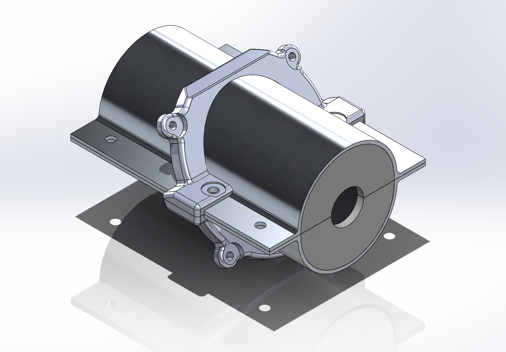
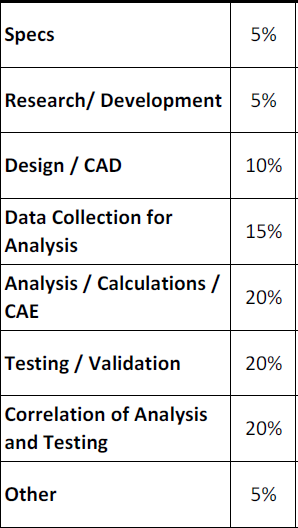
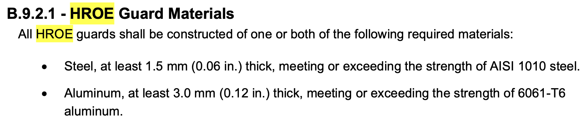
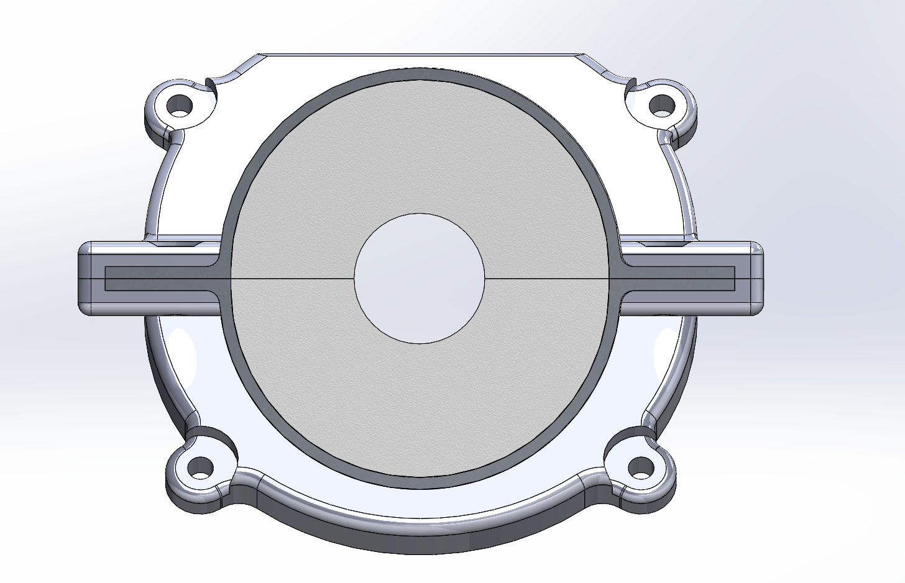
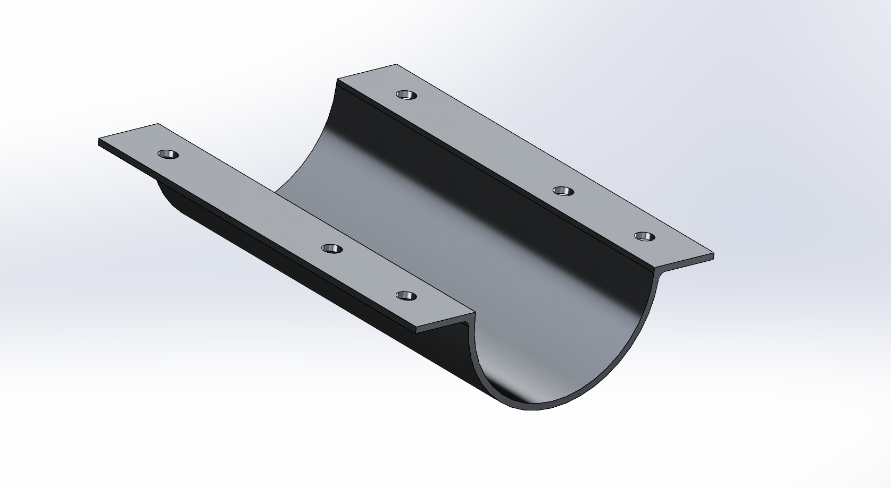

Designing and manufacturing a lightweight aluminum guard to protect the driver and maintenance personnel from hazardous drivetrain energy in a Baja SAE vehicle.
Status: Completed · 2024 Baja SAE
The front powertrain guarding is an HROE (Hazardous Release of Energy) component intended to protect the driver and maintenance personnel from fast-moving drivetrain components such as the drive shaft and U-joints. The 2024 design was based heavily on the 2023 guard, which had already achieved a strong weight-to-performance balance after replacing an older, heavier steel enclosure.
The guard uses 6061-T6 aluminum pipe cut into two halves, aluminum flanges, a 3D-printed mounting fixture, and a plastic front piece that prevents finger access. The 2024 iteration retained the lightweight architecture while introducing plastic rivets for quicker disassembly during maintenance.

Design judge score breakdown referenced by the report.
The primary design challenge was achieving the required protection and clearances without returning to the heavy, difficult-to-maintain steel enclosure used in earlier versions. The guard had to fit around the U-joints, remain securely positioned relative to the chassis, and prevent access to the rotating powertrain.
Fitment and cross-team communication were major practical challenges. The report notes that communication between the powertrain, chassis, suspension, and ergonomics teams was critical; miscommunication led to mounting issues during final assembly and required material to be bashed and ground away before the guard could fit without contacting other components.

The design evolved from a fully enclosed steel system toward a lighter aluminum guard with a plastic tube covering the prop shaft.
The 2024 design retained the 2023 architecture: 6061-T6 aluminum pipe forms the primary U-joint guard, with aluminum flanges joining the two halves. A 3D-printed fixture attaches the guard to the footplate and constrains both radial and axial movement. The front plastic piece closes the opening enough to prevent finger access around the acrylic tube.
The design was developed in SolidWorks with particular attention to clearances against neighboring vehicle systems. The flanges include mounting holes for bolts and plastic rivets. Compared with the previous version, plastic rivets were introduced so the guard could be quickly disassembled for maintenance; broken rivets could be replaced from the team's bulk supply.

Front view showing the symmetric guard geometry and modeled weld fillets.

Half of the guard showing the flange structure and mounting holes.
Manufacturing process: cut the aluminum pipe in half with a hand saw or bandsaw; create waterjet files for four sets of flanges; weld the flanges to the pipe with an aluminum-capable welder; 3D print the fixture and front piece; then assemble the completed guard. The report emphasizes careful oversight of welding because poor alignment can create substantial downstream fitment corrections.
The completed guard worked as intended in its primary role, while maintaining the lightweight design direction established in 2023. The use of aluminum for the U-joint guard substantially reduced mass compared with the earlier steel enclosure, while the plastic tube over the prop shaft further reduced weight.
No FEA was performed because the report did not identify a need for structural analysis of the component. Validation focused on fitment, protection against a potential U-joint failure, and ensuring that fingers could not reach the powertrain components while the vehicle was off.
The major issue discovered during validation was not the basic guard concept but installation and compliance details. Cross-team mounting communication caused significant fitment work, and the initial 2024 design missed the requirement for mesh or another fixture at the end of the guarding to prevent finger access. This requirement was identified during tech inspection and is a key improvement for a future iteration.
The report documents the design history, component specifications, SolidWorks/CAD approach, manufacturing process, validation, and lessons learned for the 2024 front powertrain HROE guarding. It also identifies the major design and assembly issues to address in future iterations.